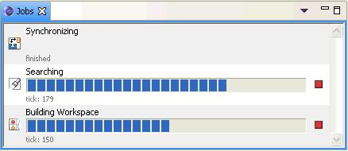

Eclipse 3.0 - Concurrent Operations in the UI
There is a need to close on the issues regarding progress in Eclipse
3.0. The current support is adequate but we there are some remaining
issues that should be addressed in order to make this new concurrency
work accessible for new users, cohesive, and slick!
Operation kinds
In the following we need to distinguish between different kinds of
background operations:
- user initiated: long
running operations: build, rebuild, checkout a project, synchronizing
with the repository, exporting a plug-in, search.
- automatically triggered:
user operations: auto build, scheduled synchronize. These are
operations
that have a meaning for an IDE user.
- system operations:
operations that are not triggered by the user and can be considered as
an implementation detail.
Issues
- users need a clear indication that a long running operation has
started.
- users need to know when an operation has ended.
- users need to know whether there are interesting new results, or
new information.
- users need to feel in control, i.e., see which operations are
running and they can easily cancel operations
- users need not be surprised by dialogs shown by a background
operation
- plug-ins have to consistently shows their results and progress in
the same way.
Long running Operation Feedback in 2.1
In the 2.1 release the users was shown the following feedback for the
different operation kinds:
- user initiated long running operations: modal progress dialog
- automatically triggered user operations: the only such operation
was autobuild.delayed modal progress monitor in status line and global
busy cursor
- system operations not visible to the user (e.g. updating the Java
index)
- Results where made available immediatly after the progress dialog
finished (e.g. Synchronize View show, compare dialog shown)
Observations: the user was often blocked but felt to be in control,
i.e., they can cancel. It is clear when new information is available.
Long running Operation Feeback in 3.0
The 3.0 feedback implementation doesn't distinguish between user
initiated and automatically triggered
operations:
- user initiated long running operations/automatically
triggered user operations:
- show progress message of active job in the status bar segment
- show unknown progress bar in the status bar
- hovering over the progress status segment shows a window with
all active jobs
- double clicking the status bar segment opens the progress view
- the problem is that the user only sees easily that something is
going on but not what it really is.
- system operations
- some system operations show up in the progress status bar.
So how are the progress issues addressed in 3.0:
- users need a clear indication that a long running operation has
started.
- no clear indication, In particular it can happen that another
operation in the status bar segment "hides" the user initiated
operation. The user has to hover over the status segment to verify that
the operation has started.
- users need to know when an operation ended
- to verify that a job has really finished the use has to open
the progress view.
- users need to know whether there are interesting new results, or
new information
- Synchronize operations pop-up a dialog with an option to not
show the dialog again.
- auto build and build don't provide any indication when they are
done.
- users need to feel in control, i.e., the see what is going on
and can easily cancel operations.
- the user doesn't see at a glance what is going on. The status
bar segment is often compressed, e.g., Performing a
CV...ources: 1% done
- users need to feel in control
- no real progress bar, unless the user opens the progress
view.
- There is no affordance that there is a progress view.
- canceling requires many more steps than in 2.1 with a modal
progress dialog:
- open the progress view
- select the job
- select cancel from the context menu.
- users need not be surprised by dialogs shown by a background
operation
- Currently some CVS operations prompt with a modal dialogs at
the end of an operation (e.g. Synchronize complete, Compare, Merge).
This interrupts the users workflow.
- plug-ins have to consistently shows their results and progress in
the same way.
- in the sdk plug-ins are showing progress in different ways,
search showing progress in the view's title bar and has a cancel
button, synchronize doesn't.
Solutions and Alternatives
The following proposal distinguishes between user initiated and
automatically triggered operations.
USER INITIATED OPERATIONS
You don't always want to run an operation in the background. The user
should be in control whether an operation runs in the background. I
often know that I want to wait until an operation is finished (e.g.
checkout a project). In particular, I don't want to poll whether an
operation is finished.
Therefore the suggestion is to give the user control over whether an
operation should be run in the background.
This should not be done in a preference, but as follows:
- the operation starts, but initially it is shown with a "classic"
modal progress dialog.
- the dialog provides a new option to run in the background
- the dialog offers a "don't ask me again" check box (not included
in the screenshot below):
Once the user decides to run the operation in the background it is
critical that the progress message (including cancel) is still visible.
Options:
- make the progress dialog non-modal (as it is done in explorer).
The dialog should become an "accumulating" progress dialog, i.e., if
more than one operation is running, each of them should be shown in the
dialog.
- show the status message in one of the result views. For example,
the build progress would show at the top or bottom of
the
problems view. Search already shows progress in the view's description
([running] "filx.txt" found 1).
AUTOMATICALLY INITIATED OPERATIONS
Consistent with the 2.1 solution an automatically initiated operation
should be non-invasive, i.e., not show a progress dialog. However, they
still need to show, that an operation has started, is in progress, and
when it is done. One suggestion to show a fixed indicator for each of
these operations in the status line (in the Eclipse SDK there is only
auto build, and Synchronize.)
This can be a compact indicator. For example, for auto build this
indicator should show that a build is in progress,
whether it has identified problems. Similarly, the Synchronize
indicator (for scheduled synchronize operaitons )would show whether
there are conflicts. It could be a similar indicator as is used in the
overview ruler of the Java editor, for the error status of a single
compilation unit.
Double clicking the indicator will reveal the result view, i.e., for a
build the problems view. Hovering over the indicator shows information
like the number of errors, or the number of conflicts for a scheduled
synchronize. The progress of an automatically initiated operation
should be shown in the accumulated progress dialog/control, but it
should not automatically reveal it.
SYSTEM OPERATIONS
The current Progress view should become a Jobs view, that is a
debugging aid for plug-in developers. It is not intended for the
end-user,
smiliar as Show View>PDE Runtime>Plug-in Registry.
Summary
- users need a clear indication that a long running operation has
started.
- For user initiated actions the modal progress dialog shows up.
- job creators decide if job is defined as User.
- users have the option of
running in the background which will collapse down into the progress
status line
- there will be a
preference for *always* running in the background
- For automatically triggered actions the dedicated status
indicator shows the information that an operation has started.
- jobs can be scheduled via
a view and views will show busy hint - will work with multiple
workbench windows
- views can be
interested in a certain job familly
- users need to know when an operation ended
- the progress dialog is dismissed
- the views tab changes
from italic to either bold (if interesting changes) or back to normal
(if no changes).
- users need to know whether there are interesting new results, or
new information
- this isn't addressed by the above. One possible solution is to
show the arrival of new interesting information in the view tab (e.g.
new errors etc.) by bolding its label. The new information indication
is removed when the view is activated.
- Open issue though: how does this work with multiple workbench
windows?
- users need to feel in control, i.e., they see what is going on
and can easily cancel operations.
- a full progress monitor with a cancel button gives the user
control.
- views that are busy
(tab is bolded) users can cancel the background job in the context.
Views decide if they want to support the cancel button. No generic
support form the UI workbench.
- users need not be surprised by dialogs shown by a background
operation
- should improve the #requestInUI() support to be less obstrusive
- plug-ins should start using the #requestInUI() and provide
feedback to the UI team.
- proposal is to remove
IProgressService#requestInUI - nobody is using and far away from being
real.
- plug-ins have to consistently shows their results and progress in
the same way.
- if a view is affected by a
background job, it only makes sense
that the view's context can be used to see the progress and cancel the
operation.
- Decide if title bar status
and a cancel button is good pratice
- Alternative is to have
a re-usable progress widget that could
be used to embed progress in a view.
Meeting Summary 2004-03-31
Attendees: Mike Wilson, Jean-Michel Lemieux, John Arthorne, Tod
Creasey, Erich Gamma, Michael Van Meekeren, Andre Weinand
First dynamic team meeting. We reviewed the items listed in the summary
section and have agreed on the following work to improve the background
job support (some items don't have names - these are decisions that
we're made but don't have an immediate action item):
- (Tod and Michael) Add support for showing a modal dialog when a
user job is run.
- The dialog will allow the user to 'run in the background'
(e.g. the default button) at which point the dialog will collapse into
the progress status line. Once collapse there won't be a way to get the
dialog back (related to improved look and feel for progress view).
- The dialog will also have a details button that will show the
other active jobs.
- There will be a workbench preference for always running jobs in
the background.
- (optional) jobs will be able to
know if they are being run in the modal dialog and may decide to
skip certain prompts in that case
- (Erich) Improve look and feel of
progress view
- Move away from the tree view and
instead provide a similar UI than the progress dialog (e.g. including
progress indicator).
- Erich is to prototype
- (Erich) Investigate showing progress
control in a view
- (Tod and Michael) Add affordance in
the progress status line for the progress view
- some ideas included adding a job
count, but for the record MVM doesn't think this is a good idea.
- (John) Add support for the Job API
so that the UI can pass additional information to the running job
- This would be used to let jobs
know if they are being run modally.
- (Tod and Michael) Improve view tab
highlight support
- Allow a view to highlight when an
interesting job familly is run
- Allow a view implementor to
schedule a job in the view (this already exists but will have to work
for multiple workbenc windows)
- Allow a view implementor to
highlight that there are interesting things in the view
- We decided that
IProgressService#requestInUI() should be removed as API. It isn't used
and would take too much effort to make usable for 3.0 As a side effect
we won't have a non-intrusive notification API in 3.0, and background
jobs will have to bug the user with modal dialogs or another domain
specific mechanism.
- Cancellation support can be added to
a view (e.g the search view) if it makes sense. There will not be any
workbench support for automatically adding a cancel button.
Meeting Summary 2004-04-01
Attendees: Mike Wilson, Jean-Michel Lemieux, John Arthorne, Tod
Creasey, Erich Gamma, Andre Weinand
- New progress view
Erich had prepared a demo of an improved progress view. There were some
discussion points about support from Core and UI to implement this for
real.

- (John) Job icon will be passed via the new Job properties API.
A default icon will be available when no icon is available.
- The view could leverage jobs that return IStatus.INFO and
display additional text for those finished jobs. IStatus (e.g. can be
obtained via Job.getResult() or IJobChangeListener.done(Job, IStatus)).
- (Tod) Erich needs an an example of how to hook this into the
existing progress support in the workbench.
- (Optional) could provide an API so that a job could provide an
action that would 'go to' the results for the job.
- If a job can block a user initiated action the job must be a
"USER" job.
- (Tod) Searching for markers should not acquire locks or instead
use the new
job API to isBlocking. Then just auto-cancel the job to allow the user
initiated job.
- (John) New API on job so that a job can determine if it's
blocking a modal job (Job.isBlockingModal).
- Status shouldn't be at 0% too long. Why, it should be at least
some number larger than zero. PR these cases.
- View progress consistency
- (Jean-Michel) cancel button should be made available in the
view.
- (Jean-Michel) italitize labels for busy indicators instead of
changing font color. (Synchronize View will be updated)
- guideline for views - half-busy can't be default because we
don't want to enforce it but UI has support for it via the
IWorkbenchSiteProgressService.
By next week we should have a hooked-up
progress view with the required APIs from core to display icons and
pass-in the properties. Tod should have a prototype of the modal 'run
in background' dialog as well as the job familly support for the
workbench parts.
Meeting Summary 2004-04-01
- Job equals USER.
- Wizards - will be happy with showing the dialog for USER jobs,
lower priority for enabling the progress indicator in wizards.
- Italic font support in viewers (57425)
- Job famillies
schedule via the site, run the job with belongsTo()
- Progress View
- progress groups
- INFO status of jobs
- Bolding of views (if focus bold remove)
- Italic support similar than bolding (view can set busy)